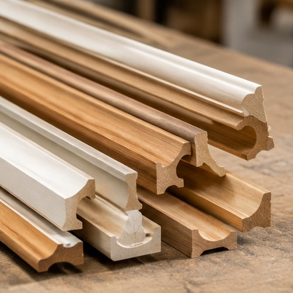

PRODUK & DESAIN
Mengenal Peran Moulding dalam Detail Interior
Profil moulding membantu menyatukan garis desain pada kusen, panel, dan elemen furnitur. Pemilihan profil yang tepat mendukung tampilan ruang yang lebih rapi dan menyatu.
Jelajahi Moulding ↗